POE 642 · Casa D
100 objetos e variantes · 38 ambientes · 10 texturas de piso
Travertino Romano levigado
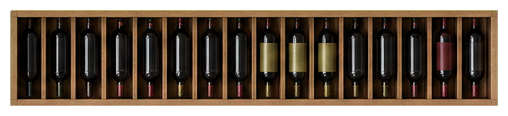
Granito marrom
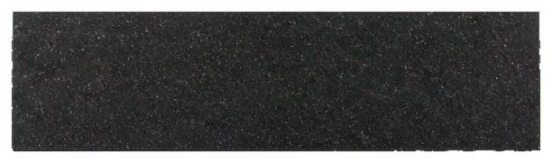
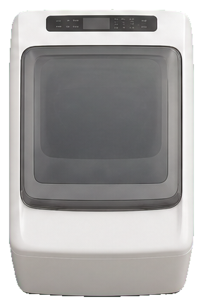
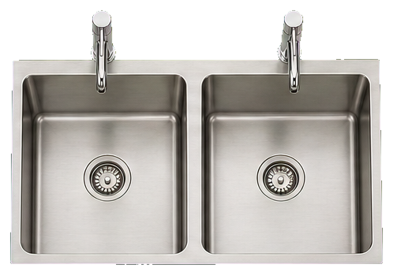
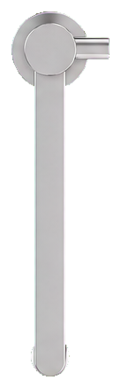
Priorize a bancada de uma cuba em quartzito Aura da apresentação de banheiros.
Travertino Romano claro dos banhos
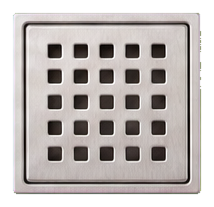
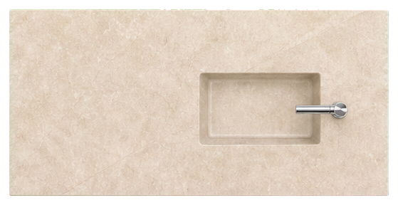
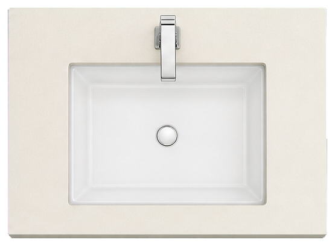
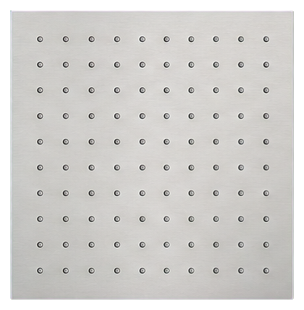
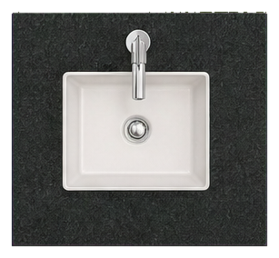
A apresentação indica travertino, granito Marrom Tabaco escovado e metais cromados.
Priorize a bancada dupla de quartzito Aura da apresentação de banheiros.
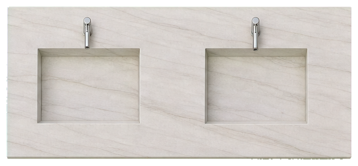
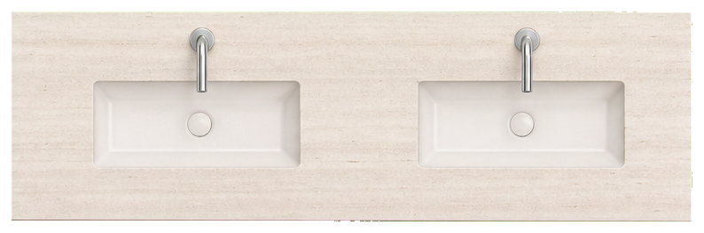
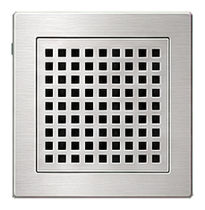
Vinílico Durafloor City Petra
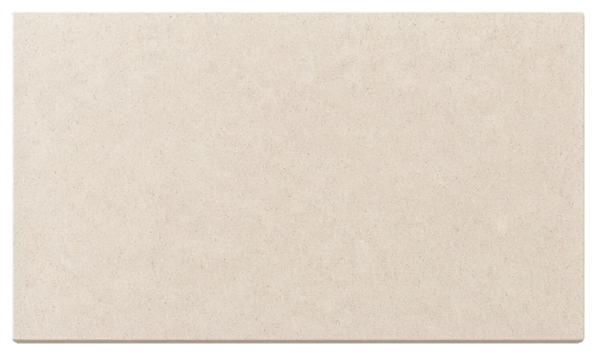
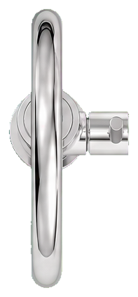
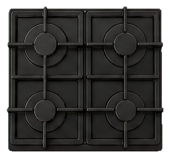
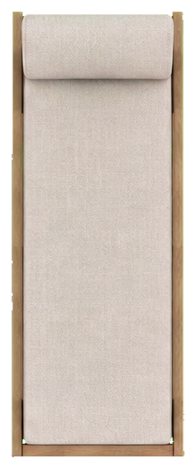
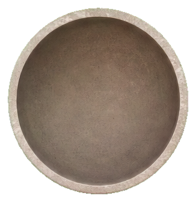
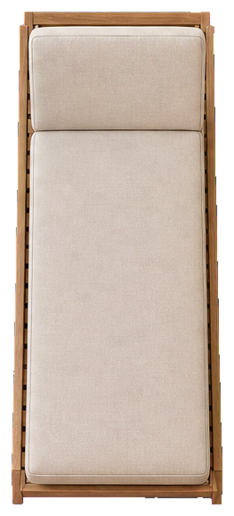
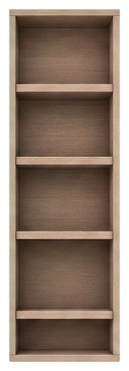
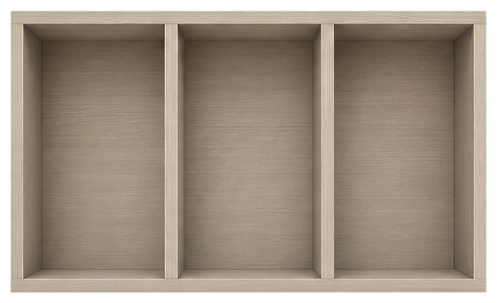
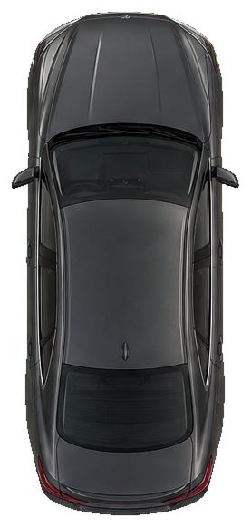
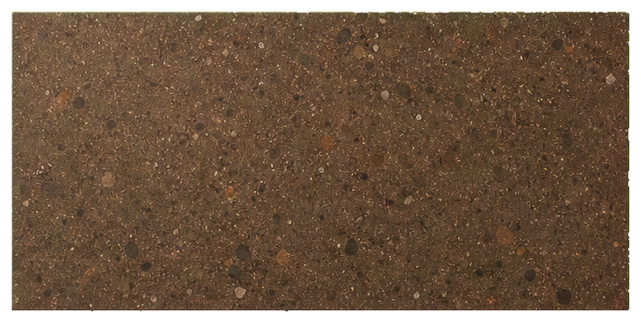
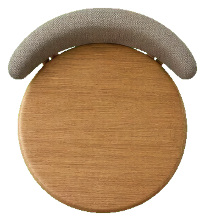
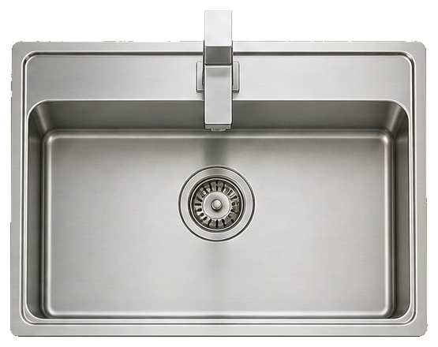
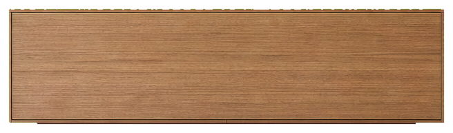
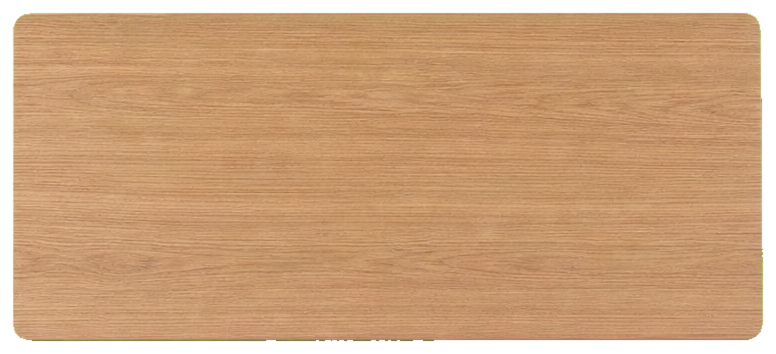
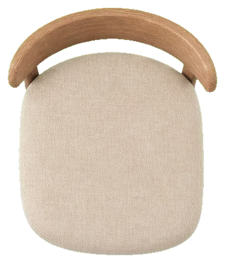
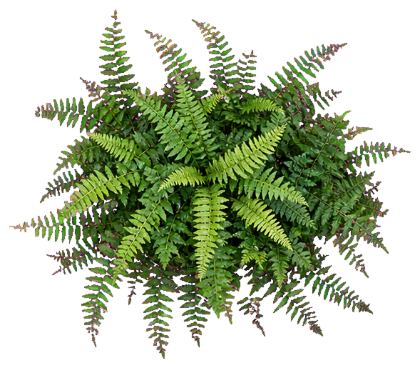
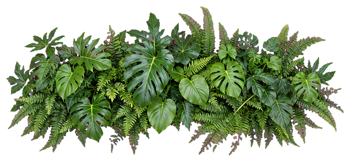
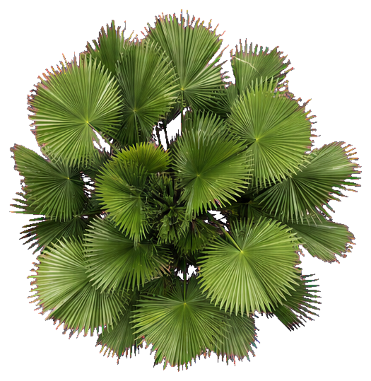
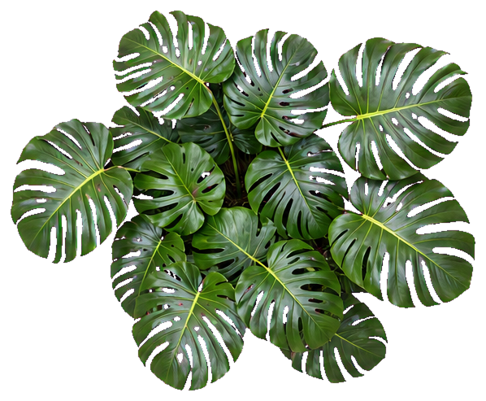
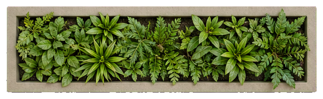
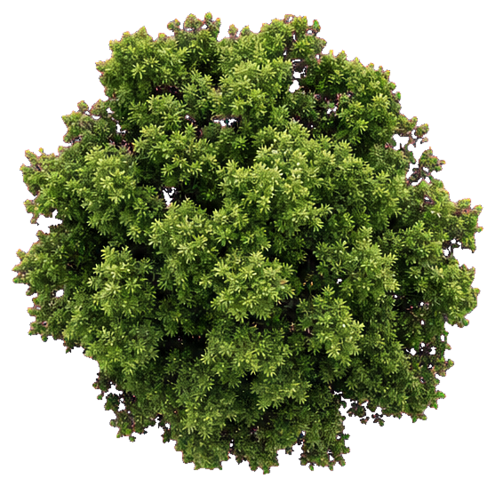
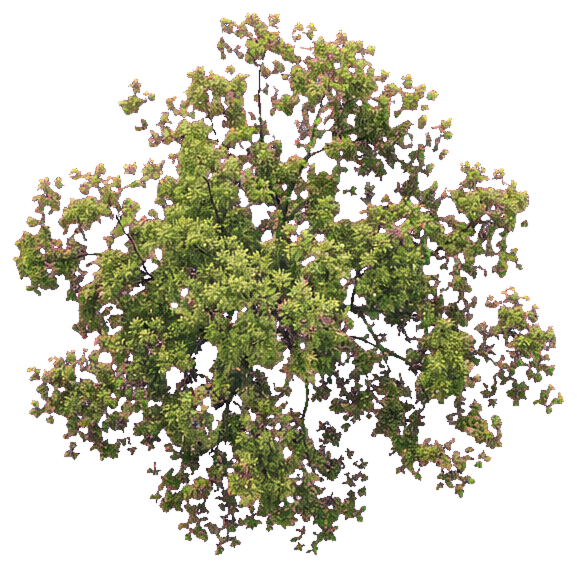
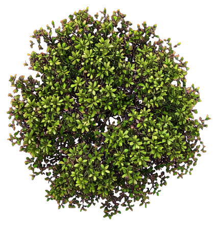
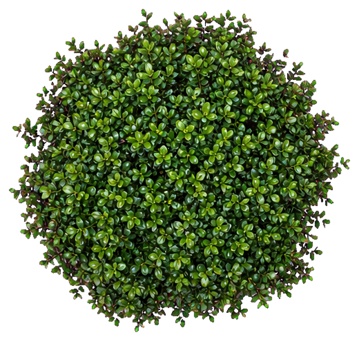
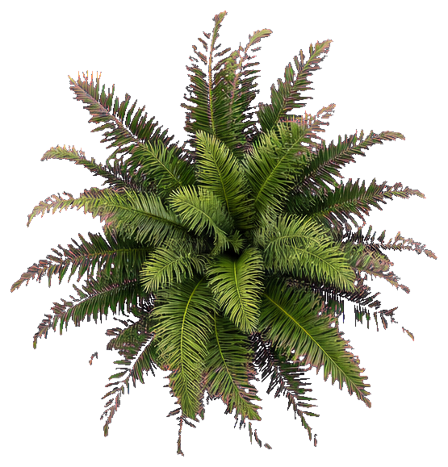
O mobiliário do estar e a mesa de jantar são peças separadas.
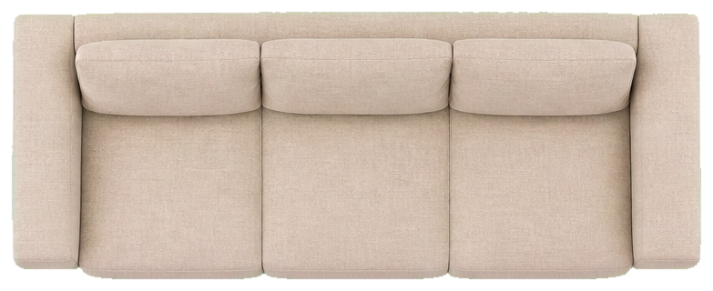
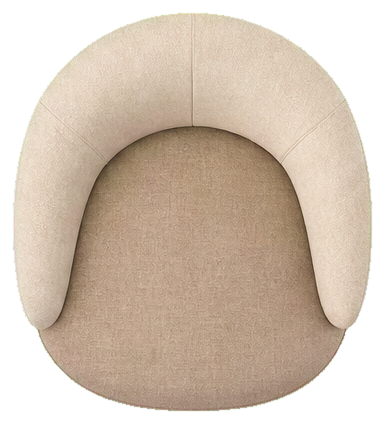
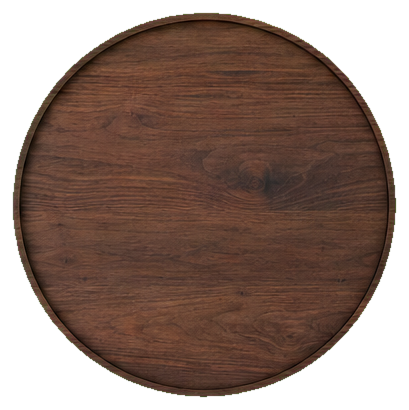
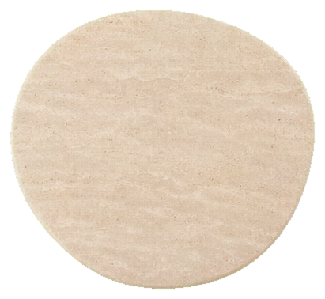
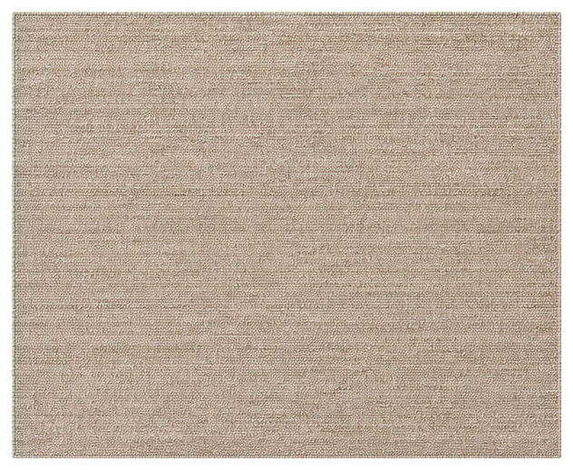
Barlavento · fundo seco · Barlavento · água da prainha
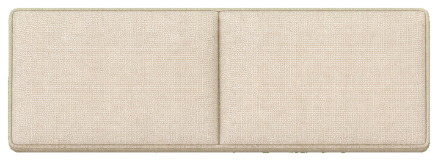
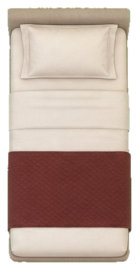
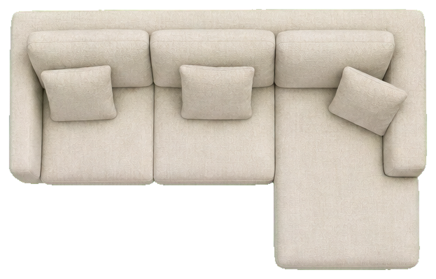
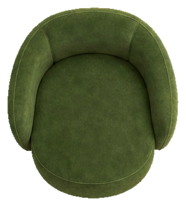
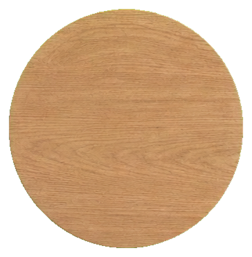
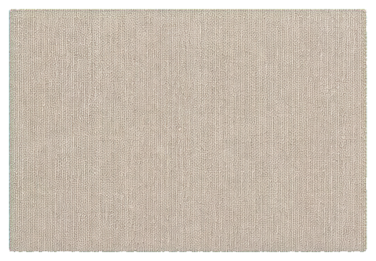
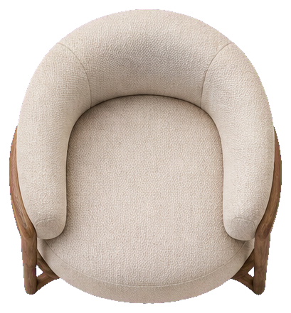
Componha o sofá e a mesa como peças independentes, nas posições desenhadas.
Bege Bahia para pisos externos
Use o PDF para posicionar esteiras, bicicletas e supinos.
A apresentação de banheiros detalha o banco de pedra em dois níveis.
Mármore Bege Bahia fosco
Nenhum objeto ou material encontrado.